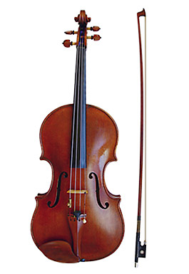
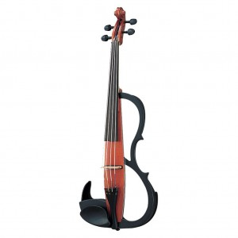

Violas
Al comparar la viola con otros instrumentos de cuerda como el violín y el violonchelo, encontramos diferencias tanto en tamaño como en sonoridad. La viola es ligeramente más grande que el violín y su tono es más grave, lo que le proporciona un carácter distintivo en las interpretaciones musicales. Por otro lado, la viola comparte similitudes con el violonchelo en cuanto a su registro tonal, pero se diferencia en el modo de ejecución y en su papel dentro de la orquesta. Es importante destacar que cada instrumento tiene sus propias virtudes y desafíos, por lo que la elección dependerá del estilo musical y preferencias del intérprete.
Violas clásicos

Violas eléctricos
